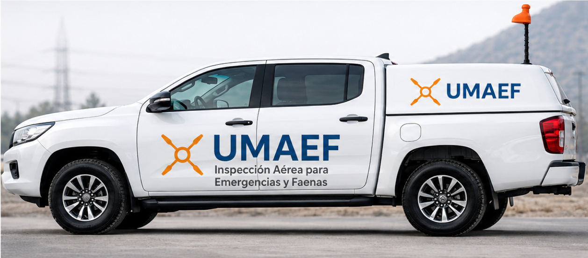

📡
Transmisión en Vivo
Visualización aérea en tiempo real para centros de control y equipos de respuesta.
Plataforma especializada en inspección aérea crítica, transmisión en vivo y apoyo a la toma de decisiones para incidentes, emergencias y operaciones complejas.
UMAEF fue concebido como una unidad técnica de inspección aérea en tiempo real, orientada a apoyar decisiones críticas en escenarios complejos.
Visualización aérea en tiempo real para centros de control y equipos de respuesta.
Operación independiente mediante conectividad satelital Starlink.
Diseñado para emergencias reales, incidentes complejos y simulacros industriales.
Información visual crítica orientada a evaluación, coordinación y control operacional.
UMAEF integra plataforma aérea enterprise, transmisión profesional y conectividad satelital propia.

Servicio orientado a concesionarias, puertos, minería y operaciones críticas.